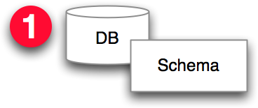
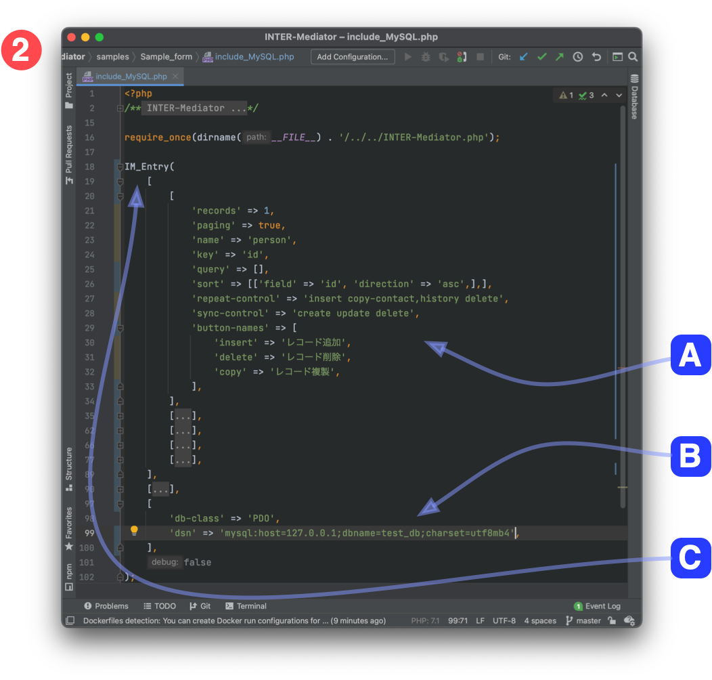
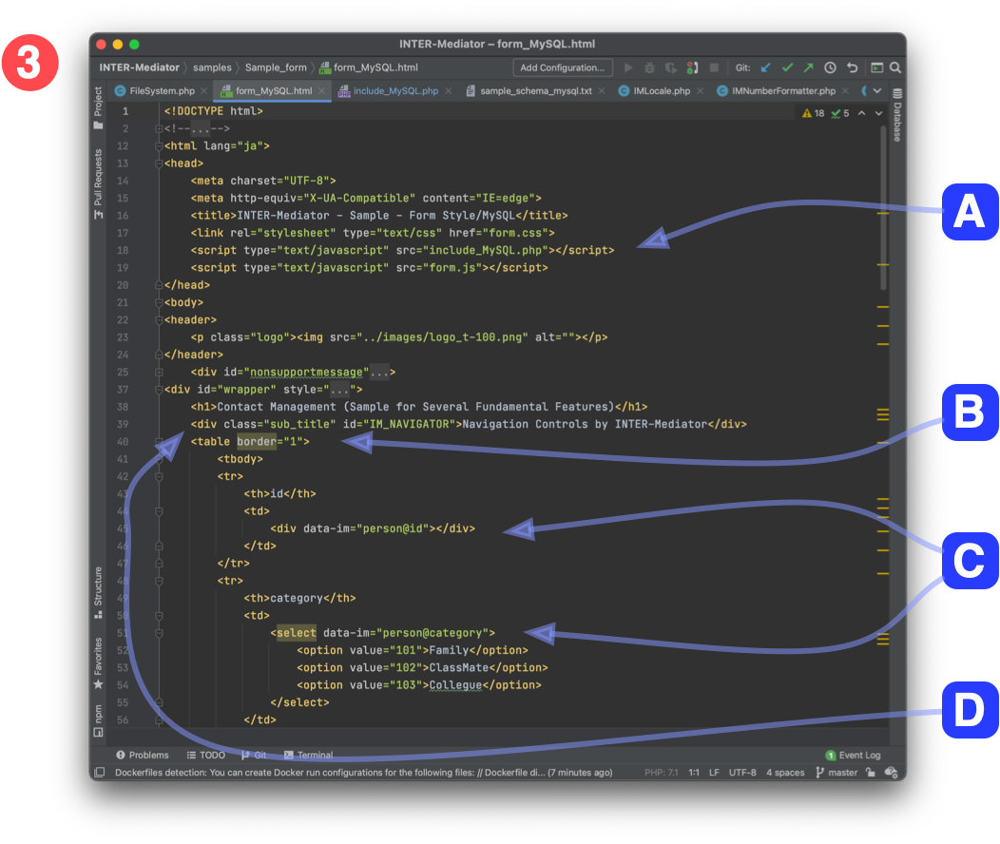
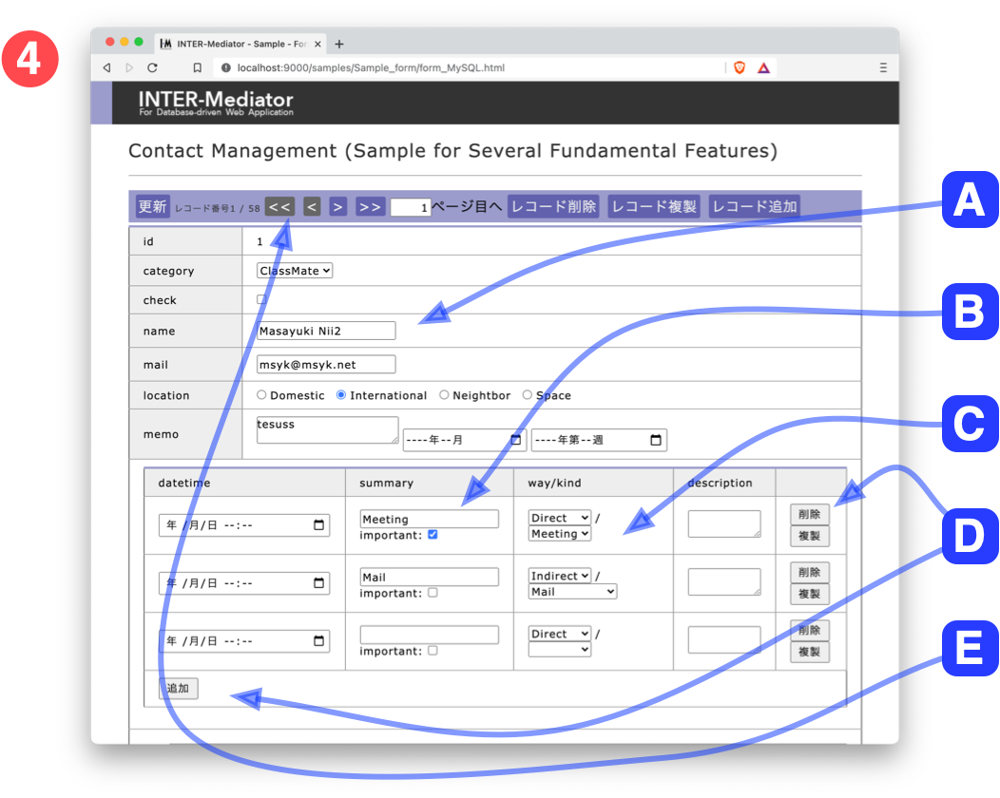

First of all, you should prepare the database.

Tables and views must be defined with following the requirements and specifications.
The "Definition file" should be prepared as a PHP file. You should concern about below:

- [2-A]It should contain the name of the table, the name of key field and other database information.
- [2-B]It should contain the database connection info.
- [2-C]Call the IM_Entry function with parameters.
Create the user interface as a HTML file, called "Page File."

You should create HTML file as user-interface. If you get multiple records, The enclosed elements of the TBODY tagged element is going to repeat with each record.
- [3-A]It should include the Definition File by the script tag's element in the header section.
- [3-B]Describe as like "IM[table-name@field-name]" within the class attribute. They are specifying which the data of table and field should be inserted.
- [3-C]With calling the "INTERMediator.construct" function, the data of database are inserted into the value of elements and their attributes. If you use on the onload attribute of body tag, the data of database is going to insert when the page is shown.
The contents of database are shown on the page.

Open the HTML file with web browser. You can see some components with the data from the database.
- [4-A]The value of input tag's element is coming from database. You can edit the value and it will restore on database.
- [4-B]Multiple lines show to expand with the one-to-many relationship.
- [4-C]This popup menus are depending with the value of another field.
- [4-D]Insert and delete for the repeating records.
- [4-E]Navigation bar is inserted. You can move previous/next records and delete and insert record.